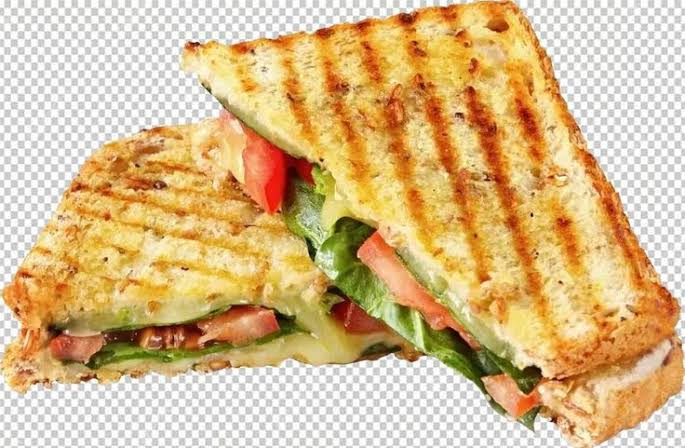

home
Grilled Cheese Sandwhich

Description
A classic grilled cheese sandwich delivers the ultimate comfort food
experience with its crispy, buttery crust and an incredibly gooey, melted
interior. Achieving the perfect result requires a low and slow cooking
method to ensure the bread toasts to a beautiful golden brown at the exact
moment the cheese melts completely. Using a combination of sharp and mild
cheeses adds depth of flavor and maximum stretch.
Ingredients
- Slice of sturdy white bread
- Softened unsalted butter
- Sharp cheddar cheese
- Monterey jack or mozzarella cheese
Steps
-
Prep the bread: Spread a thin, even layer of softened butter on one side
of each slice of bread.
-
Layer the cheese: Place one slice of bread, butter-side down, into a
cold non-stick skillet and layer the shredded or sliced cheese on top.
-
Close the sandwich: Top with the second slice of bread, ensuring the
buttered side faces outward toward the pan.
-
Toast slowly: Turn the heat to medium-low and cook for 3 to 4 minutes
until the bottom bread is beautifully golden and crisp.
-
Flip and finish: Flip the sandwich carefully, press down gently with a
spatula, and cook the other side until the bread is toasted and the
cheese is fully melted.